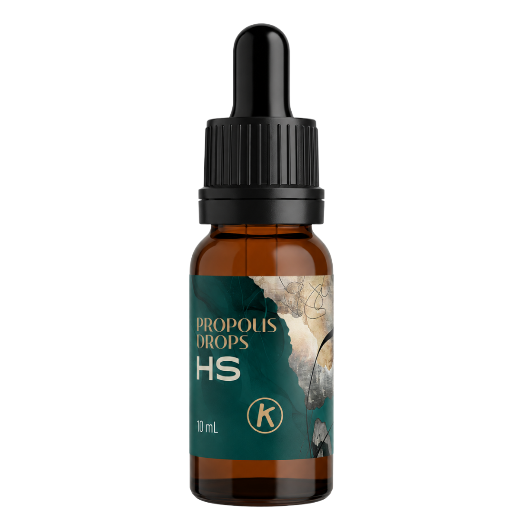
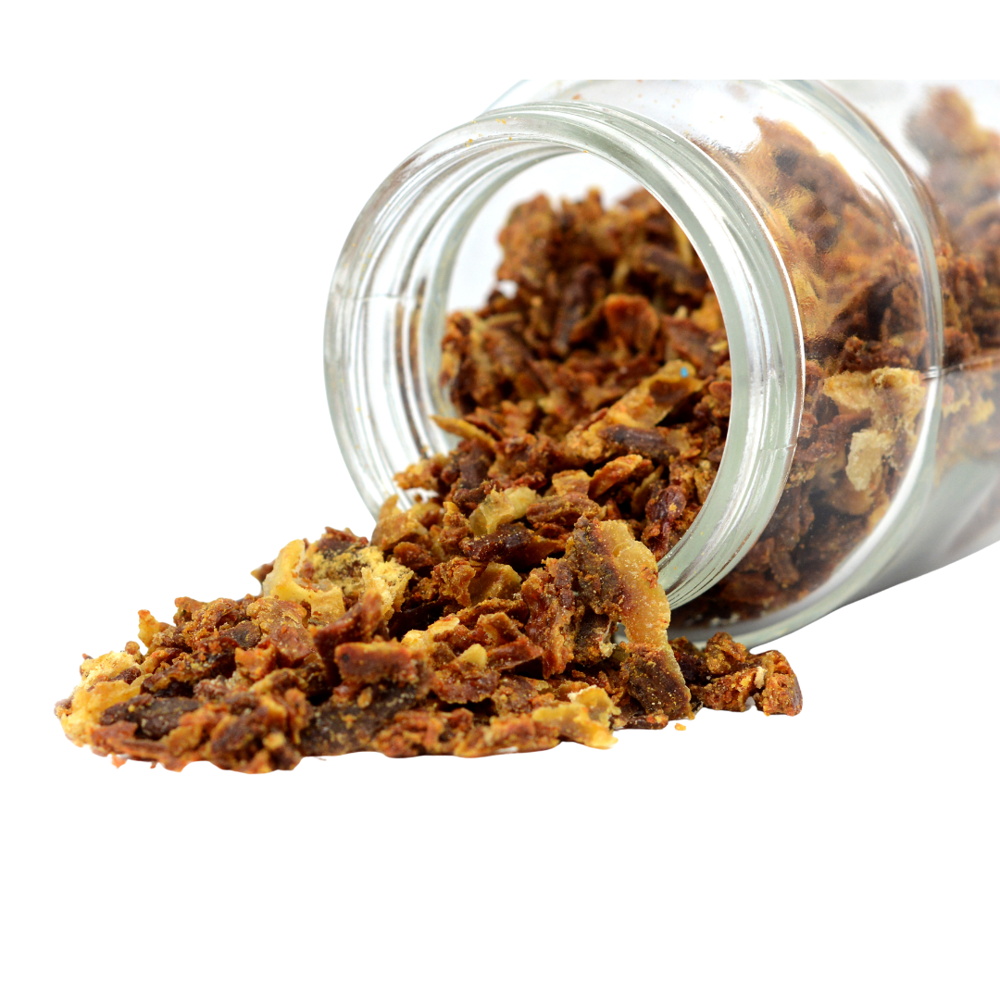
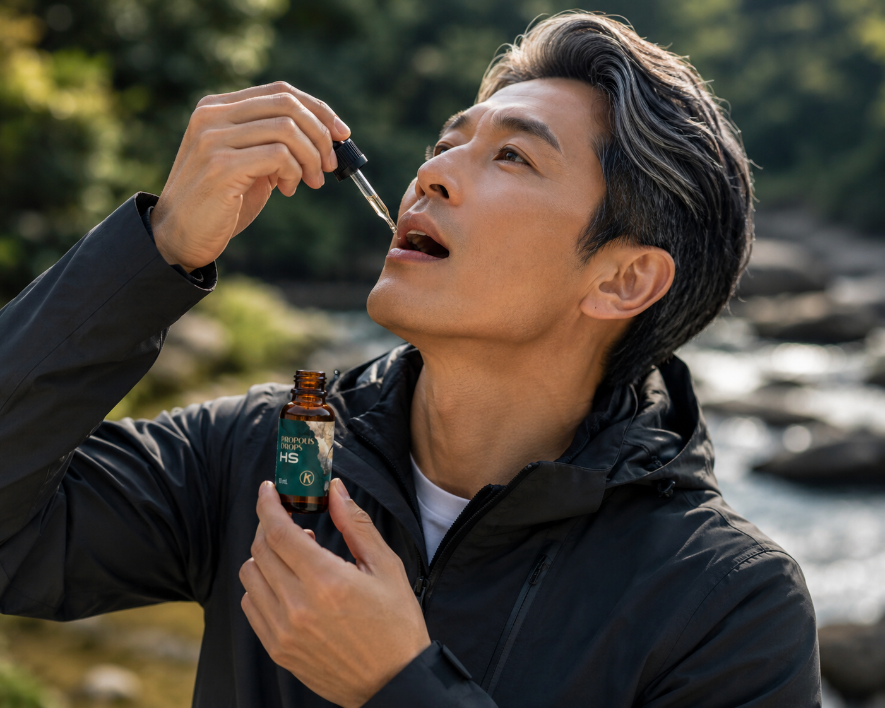

Made with WEEP technology — the result of research with the Korea Atomic Energy Research Institute. 100% water-soluble, alcohol-free, to help maintain your body's immune system.
Menggunakan teknologi WEEP — hasil riset bersama Korea Atomic Energy Research Institute. 100% larut air, bebas alkohol, untuk membantu memelihara daya tahan tubuh.

Propolis is a resin that honeybees gather from tree buds and use to seal and protect their hive — shielding it from intruders, wind, rain, fungi, and bacteria. It is, quite literally, the immune system of the colony.
Propolis adalah resin yang dikumpulkan lebah madu dari kuncup pepohonan untuk menutup dan melindungi sarangnya — dari gangguan, angin, hujan, jamur, dan bakteri. Secara harfiah, propolis adalah sistem kekebalan bagi koloni lebah.
Science has identified over 300 natural compounds in propolis — flavonoids, terpenes, and phenolic acids among them. Its makeup shifts with the plants and climate the bees draw from.
Sains telah mengidentifikasi lebih dari 300 senyawa alami dalam propolis — di antaranya flavonoid, terpen, dan asam fenolik. Komposisinya berubah mengikuti tanaman dan iklim sumber lebahnya.
The character of propolis depends heavily on where the bees live and the plants around them. Ours comes from Korea, and it's brown propolis of the poplar type, with Pinocembrin as its main flavonoid.
The difference is in the extract itself: total flavonoids above 10 mg/g, roughly ten times a standard grade. You feel that stronger character from the very first dose.
Karakter propolis sangat dipengaruhi oleh lingkungan tempat lebah hidup dan sumber tanaman di sekitarnya. Propolis kami berasal dari Korea dan termasuk brown propolis jenis poplar, dengan Pinocembrin sebagai flavonoid utamanya.
Perbedaannya terletak pada kualitas ekstraknya, dengan kadar total flavonoid lebih dari 10 mg/g, sekitar sepuluh kali lebih tinggi dibandingkan grade propolis biasa. Karakter propolisnya pun terasa lebih kuat sejak pertama dikonsumsi.

Grade K-100 Korean brown propolis. Total flavonoids confirmed by Certificate of Analysis.Grade K-100 brown propolis Korea. Total flavonoid dikonfirmasi oleh Certificate of Analysis.
Ordinary propolis is sticky, alcohol-based, and hard to absorb. WEEP changes that from the source — a method born from research with the Korea Atomic Energy Research Institute and protected by patent since 2006.
Propolis biasa lengket, berbasis alkohol, dan sulit diserap. WEEP mengubahnya dari asalnya — metode yang lahir dari riset bersama Korea Atomic Energy Research Institute dan dilindungi paten sejak 2006.
| Extraction MethodMetode Ekstraksi | Flavonoids | Terpenoids | Polysacc.Polisakarida | Minerals |
|---|---|---|---|---|
| WEEP (ours)(kami) | ● HighTinggi | ● HighTinggi | ● HighTinggi | ● HighTinggi |
| Ethanol extractionEkstraksi etanol | ● HighTinggi | ● HighTinggi | ○ LowRendah | ○ LowRendah |
| Water extractionEkstraksi air | ○ LowRendah | ○ LowRendah | ● HighTinggi | ● HighTinggi |
| SupercriticalSuperkritikal | ○ LowRendah | ● HighTinggi | ○ LowRendah | ○ LowRendah |
| MicellizationMiselisasi | ○ LowRendah | ○ LowRendah | ○ LowRendah | ○ LowRendah |
WEEP is the only method that retains all four compound families at high levels — flavonoids, terpenoids, polysaccharides, and minerals.WEEP adalah satu-satunya metode yang mempertahankan keempat golongan senyawa pada tingkat tinggi — flavonoid, terpenoid, polisakarida, dan mineral.
The simplest way to see the difference is to drop it into a glass of clear water. Ordinary propolis tends to cloud the water, form sediment, or leave a waxy film. Propolis Drops HS blends in more evenly, stays clear, and leaves no sediment.
Cara paling sederhana untuk melihat perbedaannya adalah dengan meneteskan propolis ke dalam segelas air bening. Propolis biasa cenderung membuat air keruh, membentuk endapan, atau meninggalkan lapisan lilin. Propolis Drops HS dapat menyatu lebih merata, tetap bening, dan tidak meninggalkan endapan.
That clarity reflects a cleaner extract with better solubility. The result is propolis that's more pleasant to take and easier to use day to day.
Kebeningan tersebut mencerminkan karakter ekstrak yang lebih bersih dan memiliki kelarutan yang lebih baik. Hasilnya, propolis menjadi lebih nyaman dikonsumsi dan lebih mudah digunakan dalam keseharian.
Ordinary — cloudy, sinksBiasa — keruh, mengendap
Propolis Drops HS — clearPropolis Drops HS — bening
As many people already know, natural propolis has long been used to help maintain the body's immune system. Beyond that, propolis and its many natural compounds still hold plenty worth exploring. Curious about what's inside and what science has studied? Take a look below. Seperti yang sudah banyak dikenal, propolis dari alam telah lama digunakan untuk membantu memelihara daya tahan tubuh. Selain itu, propolis dengan berbagai senyawa alaminya masih menyimpan banyak hal menarik untuk dipelajari. Penasaran dengan kandungannya dan apa saja yang sudah diteliti oleh sains? Lihat di bawah ini.
Blends instantly and clearly into any drink.
Menyatu bening seketika ke minuman apa pun.
Reassuring as a daily staple for the family.
Lebih tenang sebagai stok harian keluarga.
Never sticky, no sediment left behind.
Tidak lengket, tanpa endapan tersisa.
A strong flavonoid character that holds up, even mixed into honey or water.
Karakter flavonoid yang kuat dan tetap terasa, walau dicampur madu atau air.
A 10 mL dropper that goes anywhere.
Botol tetes 10 mL, bawa ke mana saja.
Purified by patented WEEP science.
Dimurnikan oleh sains WEEP berpaten.

A 10 mL bottle, easy to carry anywhere.
Botol 10 mL, mudah dibawa ke mana saja.
Under the tongue, or into ~100 mL of water.
Di bawah lidah, atau ke ±100 mL air.
Make it a consistent daily habit.
Jadikan kebiasaan harian yang konsisten.
We don't ask for trust — we give you reasons for it.
Kami tidak meminta kepercayaan — kami memberi Anda alasannya.
POM TR 256037591
Halal certifiedBersertifikat Halal
Quality-assured productionProduksi terjamin mutu
Born from R&D with the Korea Atomic Energy Research InstituteLahir dari riset bersama Korea Atomic Energy Research Institute
Keeping stamina up through long, demanding days.
Menjaga stamina di hari-hari yang panjang dan padat.
An alcohol-free choice the whole family can share.
Pilihan bebas alkohol yang bisa dinikmati seisi rumah.
A little support for daily defenses when it matters.
Sedikit dukungan daya tahan saat paling dibutuhkan.
A clean, natural daily ritual you'll look forward to.
Ritual harian yang bersih dan alami untuk dinanti.
Alcohol-free. Perfectly soluble. Helping to maintain your immune system — the clean, honest way.
This product is a Traditional Medicine (Obat Tradisional) that helps maintain the body's immune system. It is not a substitute for professional medical treatment. Not for children under 1 year of age. Take care if you have a history of allergy to bee products and their derivatives. Store in a dry place, below 30°C, out of direct sunlight.
Produk ini adalah Obat Tradisional yang membantu memelihara daya tahan tubuh. Bukan pengganti pengobatan medis profesional. Tidak untuk anak usia di bawah 1 tahun. Hati-hati bagi yang memiliki riwayat alergi produk lebah dan turunannya. Simpan di tempat kering, di bawah suhu 30°C, terhindar dari sinar matahari langsung.